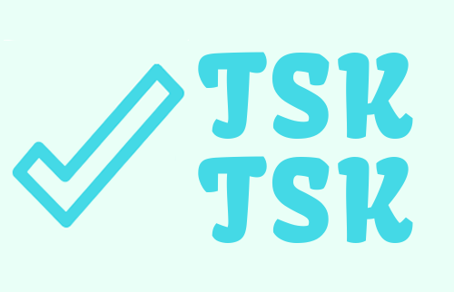

<!--

<head>
  <meta charset="utf-8">
  <meta name="viewport" content="width=device-width, initial-scale=1, shrink-to-fit=no">
  <link rel="stylesheet" href="bootstrap-css/bootstrap.min.css">
  <link rel="stylesheet" href="main.css">

  <script src="https://code.jquery.com/jquery-3.3.1.slim.min.js" integrity="sha384-q8i/X+965DzO0rT7abK41JStQIAqVgRVzpbzo5smXKp4YfRvH+8abtTE1Pi6jizo" crossorigin="anonymous"></script>
  <script src="https://cdnjs.cloudflare.com/ajax/libs/popper.js/1.14.3/umd/popper.min.js" integrity="sha384-ZMP7rVo3mIykV+2+9J3UJ46jBk0WLaUAdn689aCwoqbBJiSnjAK/l8WvCWPIPm49" crossorigin="anonymous"></script>
  <script src="https://stackpath.bootstrapcdn.com/bootstrap/4.1.3/js/bootstrap.min.js" integrity="sha384-ChfqqxuZUCnJSK3+MXmPNIyE6ZbWh2IMqE241rYiqJxyMiZ6OW/JmZQ5stwEULTy" crossorigin="anonymous"></script>

  <title>Tsk-Tsk To-Do App</title>
</head> -->


<!-- need to replace link (links to google) in logo, need to replace the placeholder with logo -->
<!-- button not hooked up -->
<!-- left skeleton for links in case of need in the future, commented out. -->

<nav class="navbar navbar-expand-sm navbar-light bg-light fixed-top">
  <a class="navbar-brand" href="landing-page.html"></a>
  <button class="navbar-toggler" type="button" data-toggle="collapse" data-target="#navbarNav" aria-controls="navbarNav" aria-expanded="false" aria-label="Toggle navigation">
    <span class="navbar-toggler-icon"></span>
  </button>

  <div class="collapse navbar-collapse" id="navbarNav">
    <!-- <ul class="navbar-nav mr-auto mt-2 mt-lg-0">
      <li class="nav-item">
        <a class="nav-link active" href="#">Home</a>
      </li>
    </ul> -->
    <button type="button" class="btn btn-primary" data-toggle="modal" data-target="#modal-signup">
      Sign up
    </button>
  </div>
</nav>
